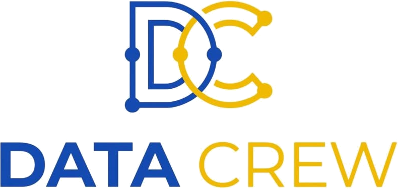
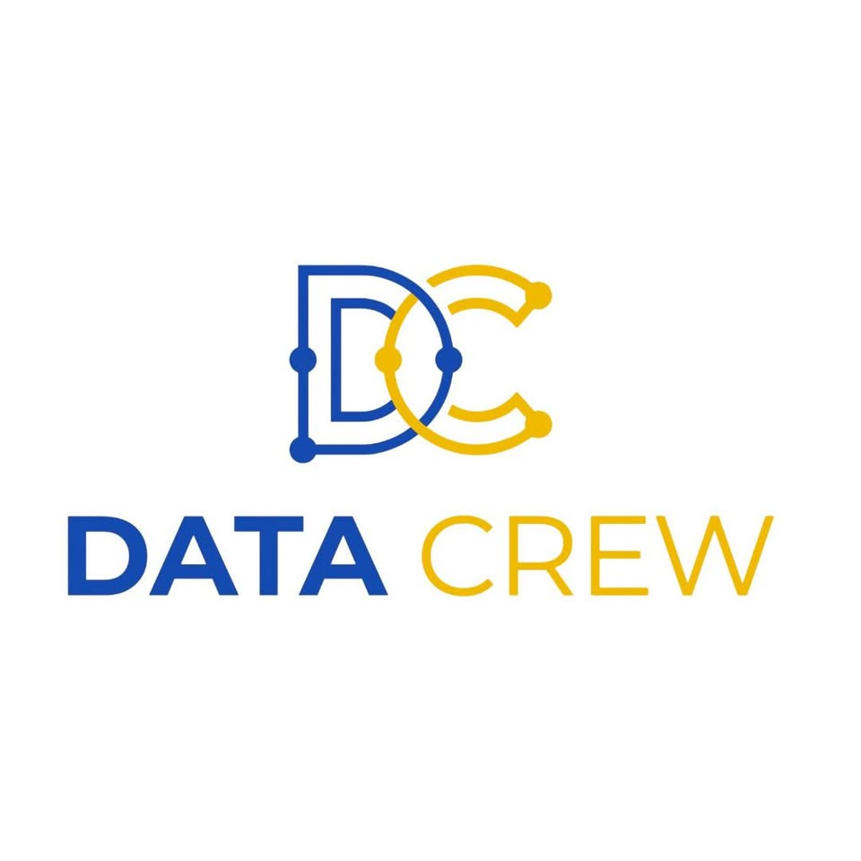

Explore the data journey
Ask a question, find the right data, uncover a pattern, and share what it means. DataCrew brings this process to life through collaborative learning and hands-on projects.

FST AL HOCEIMA · DATA & AI CLUB
We’re DataCrew, the Data & AI Club at FST Al Hoceima. Explore data science, learn how intelligent systems work, and turn questions into insight—together.
We’re the Data & AI Club at the Faculty of Science and Technology of Al Hoceima.
From understanding datasets to exploring machine learning, DataCrew is a place to ask better questions, share what you learn, and turn raw information into useful insight. No matter your starting point, there’s room to grow here.
Explore the ideas and tools behind data science and artificial intelligence.
Ask a question, find the right data, uncover a pattern, and share what it means. DataCrew brings this process to life through collaborative learning and hands-on projects.
Have a data question you want to explore? Bring it to the crew
Data becomes more powerful when curious people work on it together.

Look closer at the data, test assumptions, and ask what else it can tell us.
Exchange skills in analytics, visualization, machine learning, and AI.
Collaborate on projects that turn data discoveries into practical ideas.
↗Interested in data science, analytics, or AI? Connect with DataCrew and discover how to learn and build with the community.
Connect with DataCrew → datacrew.fst@gmail.com ↗ FST Al Hoceima · Al Hoceima, MoroccoNo. Bring your curiosity. The club is a place to explore data and AI, share what you learn, and build skills at different levels.
Topics include data science, analytics, visualization, machine learning, and artificial intelligence.
DataCrew creates opportunities to learn together, work with data, and explore practical AI ideas through community activities.
Start a conversation about data, AI, or a project you’d like to explore.
datacrew.fst@gmail.com